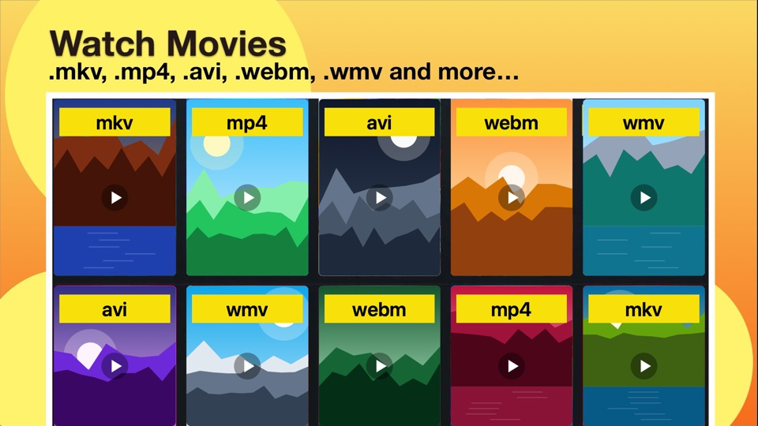

How to play MKV and AVI files on Apple TV
You have a home video or a file in .mkv, .avi or .wmv, and Apple TV won't play it. Here is why, and two ways around it.
Updated November 2026
Why it doesn't play
Apple's own apps are built for formats like .mp4 and .mov. Files in .mkv, .avi, .wmv and .webm are common on computers, but Apple TV's built-in apps don't open them.
Option 1: Convert the file (free)
- On your computer, use a free video converter to turn the file into .mp4.
- Then play it through AirPlay or Home Sharing (see watching videos from your computer).
This works, but converting takes time for each file and can lower the quality or drop extra audio tracks and subtitles.
Option 2: A player app that plays them
- On your Apple TV, open the App Store and search for Private Player.
- Bring your files in from a web browser or your Mac or PC.
- Open the file and press play. Private Player plays .mkv, .avi, .mp4, .3gp, .mov, .webm, .wmv and more, and music formats like .flac and .ogg.

Common questions
Can I play these files from my iPhone with AirPlay?
Only if an app on the iPhone can play the file first. AirPlay sends what the phone is playing; it doesn't add formats.
What about music files like FLAC?
Private Player plays .flac, .mp3, .ogg, .wav, .wma and more on Apple TV.